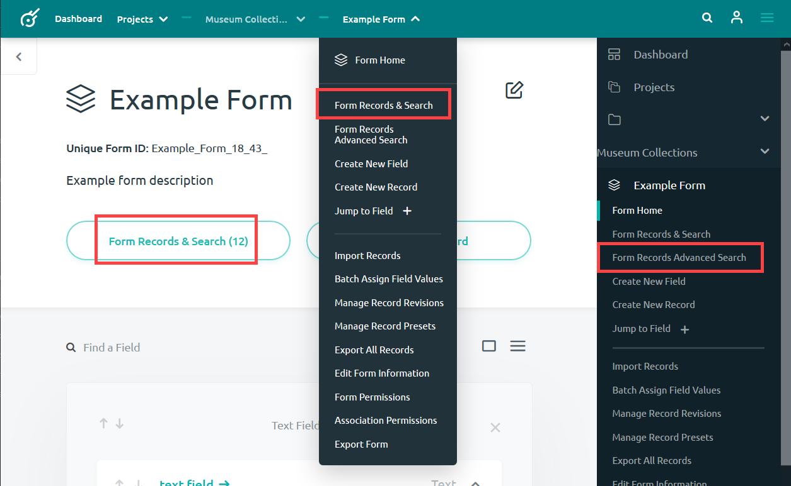
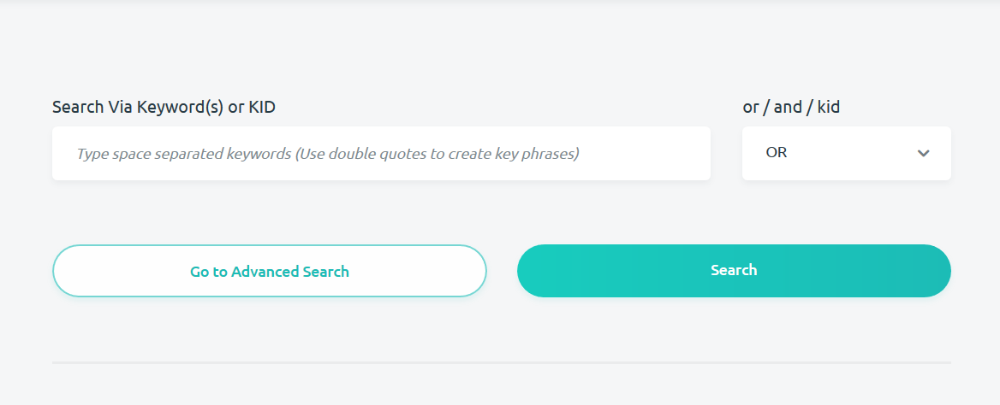
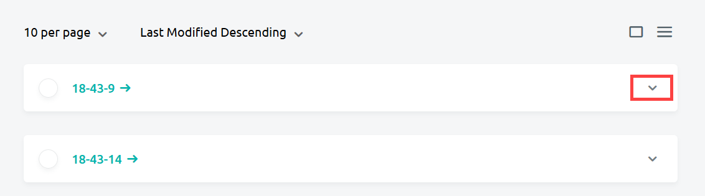
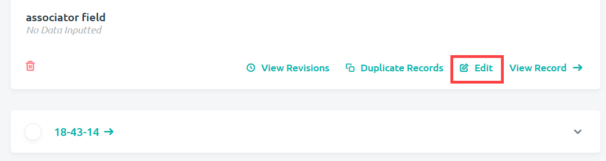
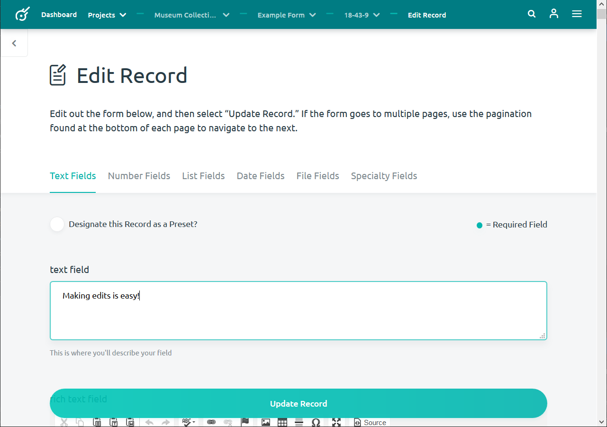
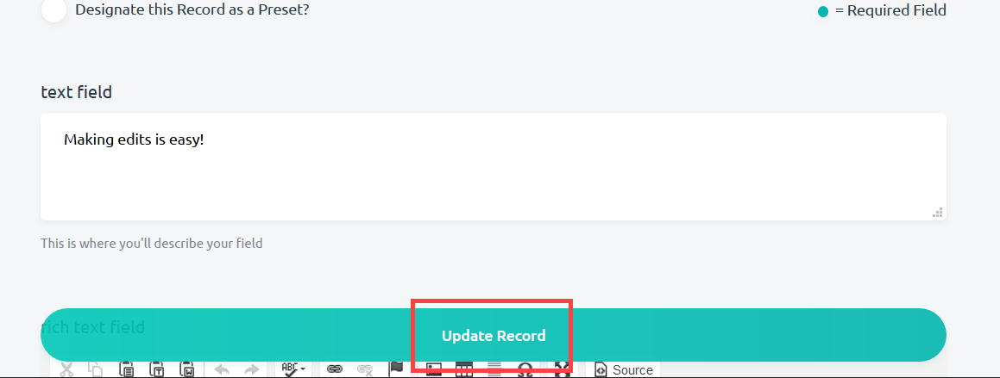

editing_a_record
The data for any record can be updated after the record has been created. This means that you can fill in empty values from an initially created record, update your record if new information comes to light, or fix mistakes in data entry. Any revisions that you make to a record, however, will be logged by Kora for you to view later. This will allow you to see a history of what that record looks like, meaning that any data you enter into Kora should not be lost.
In order to edit a record, follow these steps:
-
Navigate to the Record Search and Browse page from the home of the form that you want to edit records in.

-
Search and browse for the record or records that you want to edit from this page.

-
Open up the record that you want to edit by clicking the down arrow button.

-
At the bottom of your opened record will be the Edit button. Press this to edit your record.

-
You can then edit the value for any field that you want. Just enter the same as when creating any record.

-
Click the floating Update Record button at the bottom of the Edit Record page to make your changes permanent. Any changes that have been made to the field options (such as making it a required field) will have to be abided by when updating the record.
